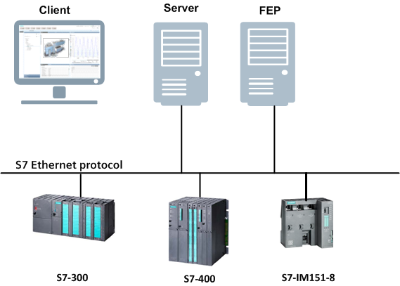
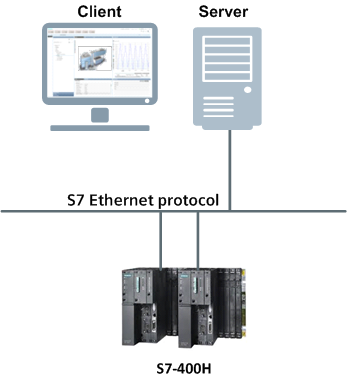

Overview

NOTE:
The S7 Communication Layer is a prerequisite for Simatic S7. In order to install the S7 Communication Layer, the Windows username should not have a space character in it. If it has a space character and the Installer shows an error message, you must install the S7 Communication Layer manually by navigating to the following location, …\InstallFiles\EM\Simatic_S7\Prerequisites.
Compatibility
Compatibility List (V4.1) | |||
Topic | Description | Version | Supported |
Simatic S7-300/400 | Programmable logic controller (PLC), communication link via Ethernet CP or PNIO interface | any | Yes |
Simatic S7-400 H | Programmable logic controller (PLC) for high availability solutions | any | Yes |
Simatic S5 | Programmable logic controller (PLC) | any | No |
Simatic S7-200 / Logo V8 | Programmable logic controller (PLC) | any | No |
Simatic S7-1200 | Programmable logic controller (PLC) | V3 | Yes |
V4 | Yes 1) | ||
Simatic S7-1500 | Programmable logic controller (PLC) | any | Yes 1) |
S7-Industrial Ethernet | Siemens S7 communication protocol (ISO-on-TCP); communication link via network adapter or Ethernet CP | n.a. | Yes |
PROFINET | Process Field network protocol; communication link via network adapter or Ethernet CP | any | No |
PROFIBUS DP | Process Field bus-system; communication link via Profibus CP | any | No |
1) | The optimized block access for the automation station address area is not supported. The automation station has to be configured in compatibility mode for classic S7 block communication. This may lead to additional configuration effort. This configuration is valid till Desigo CC V4.0. From Desigo CC V4.x onwards, S7Plus driver caters to the communication with S7-1200 and S7-1500 devices. |
Licensing
In addition to the licenses for the base feature set, clients, and options, sufficient S7 device connection and data point licenses have to be activated to run the system.
S7 Connection Licenses
Each connected S7 requires a S7 connection license (sbt_gms_add_S7_connections) . When installing the Simatic S7 extension module, eight S7 connection licenses are released to be used in the entire system. To connect more than eight S7 to the management platform, additional license packages (56 S7 connections) per Server or FEP are required.
Data Point Licenses
Any imported S7 tag requires 1 SCADA data point license. (See Supported S7 Data Type for an overview over the supported data types) (sbt_gms_add_scada_tag).
Licensed Data Point Count | ||
Topic | Data Point Type | Weight |
Primary | GMS_S7_BA_BOOL_RO_1 GMS_S7_BA_BOOL_RW_1 GMS_S7_BA_CHAR_RO_1 GMS_S7_BA_CHAR_RW_1 GMS_S7_BA_DATE_AND_TIME_RO_1 GMS_S7_BA_DATE_AND_TIME_RW_1 GMS_S7_BA_DATE_RO_1 GMS_S7_BA_DATE_RW_1 GMS_S7_BA_ENUM_RO_1 GMS_S7_BA_ENUM_RW_1 GMS_S7_BA_INT_RO_1 GMS_S7_BA_INT_RW_1 GMS_S7_BA_REAL_RO_1 GMS_S7_BA_REAL_RW_1 GMS_S7_BA_S5TIME_RO_1 GMS_S7_BA_S5TIME_RW_1 GMS_S7_BA_S7COUNTER_1 GMS_S7_BA_S7TIMER_1 GMS_S7_BA_STRING_RO_1 GMS_S7_BA_STRING_RW_1 GMS_S7_BA_TIME_OF_DAY_RO_1 GMS_S7_BA_TIME_OF_DAY_RW_1 GMS_S7_BA_TIME_RO_1 GMS_S7_BA_TIME_RW_1 GMS_S7_BA_UINT_RO_1 GMS_S7_BA_UINT_RW_1 | 1 point |
Standard Configuration
The standard configuration allows up to 64 S7 connections (8 pre-installed + 56 per S7 connection license) to the management station server. For larger configurations or other purposes (for example, load balancing, campus infrastructure) multiple FEP's can be added. Per FEP up to 56 additional S7 connections can be configured. In any case the standard network adapter can be used. The S7 communication link can be either the PNIO interface or an Ethernet CP interface (for example, CP-343).

Named Connection Configuration
In rare cases, such as fault tolerant configurations (Simatic S7-400 H) named connections have to be engineered. The named connection configuration allows up to 64 S7 connections (8 pre-installed + 56 per S7 connection license) to the management station server. For larger configurations or other reasons (for example, load balancing, campus infrastructure) multiple FEP's can be added. Per FEP up to 56 additional S7 connections can be configured. In addition, for each of the FEP's or Servers a SIMATIC NET REDCONNECT Software and a specific Ethernet network adapter (for example, CP1623) are needed.

NOTE:
All named connection types are supported based on SIMATIC NET standard installation.
Use of Special Characters in Naming Conventions
Following are the general rules with respect to the use of special characters in naming conventions or notations.
- All names (identifiers) are case sensitive. For path specifications, consider case sensitivity and do not use blanks.
- All identifiers have to start with an alphabetic character (characters ‘A...Z’, ‘a...z’, ‘_’ and the digits ‘0...9’) or with an underline ‘_’ and may not contain any special characters. Construct the identifiers exclusively using the characters ‘A...Z’, ‘a...z’, ‘_’ and the digits ‘0...9’.
- The use of umlauts ‘ä’, ‘ö’, ‘ü’ is allowed in many cases but it is recommended to avoid using them. This is because their corresponding keys might not be available during international use and the display might be problematic in case of foreign-language systems.
- In System names (for example, Desigo CC ), the following characters are not supported 'blank', '\', '/', '"', '?', '<', '>', '*', '│', ':', ';', '''. Characters such as '.' and ':' are not allowed to be used as separators of the complete element address.
- The following special characters cannot be used when specifying datapoint or CNS names 'blank', ',', '.', ':', ';', '!', '?', '[', ']', '{', '}', '\', '\\', '|', '\t', '"', ''', '#', '*', '@', '$', '%', ''', '+', '/', '?', '%', '&'. If the Management Station import data (for example, csv, s1x,… files) contain data point/CNS names that contain these special characters, then during import, the importer either ignores or skips these characters or replaces these characters with an ‘_’. The use of underscore '_' as the first character is reserved in the internal data point names. In addition to the special characters, specially the dot '.' and colon ':' cannot be used as separators of the complete element address.
- For object descriptions, all characters except '.' can be used. If '.' is present in the description, it is replaced with '_' during import.
- For names of user designations, all characters except ':' and '*' are allowed. If these characters are present in the user designations, then during import they are replaced with ';'.
- For names of folders and file objects, avoid using these characters ',', '.', ';', '/', '?', '@', '&', '=', '+', '$', '<', '>', '#', '%', '{', '}', '│', '\', '^', '[', ']', '‘'.